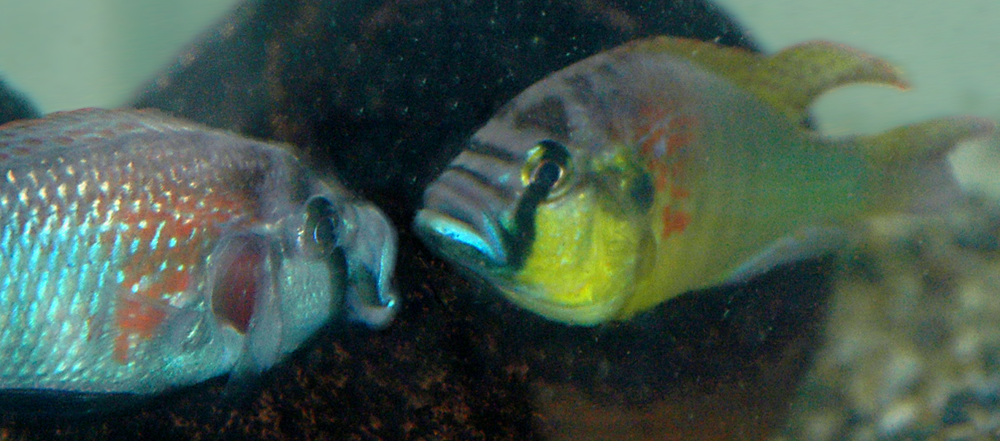

Image by Russell D. Fernald and Sabrina S. Burmeister, published in Social Opportunity Produces Brain Changes in Fish. PLoS Biology Vol. 3/11/2005, e390 doi:10.1371/journal.pbio.0030390, accessed at Wikimedia Commons. Licensed under CC-BY-2.5. I have cropped the original image.
I have been working in the Fernald Lab at Stanford University since March of 2018.
I am using Astatotilapia burtoni, an East African cichlid fish, as a model system to investigate the functions of androgen receptors (AR). More precisely, I have examined the effects in males of disabling ARα and ARβ, particularly on phenotypes related to social status. The preliminary results of this study show ARα and ARβ to be largely non-redundant and critical for many traits typical of socially dominant male A. burtoni.
I use these programs in my research to reduce bias and accelerate repetitive tasks. They are all available under open-source licenses for your use (see the GitHub pages for details). If you find them helpful, please let me know! I also welcome contributions of code, documentation, bug reports, and feedback on what you think.
scorevideo. Useful for
transferring marks or behaviors between log files, for example
when the lights come on in a recording.Below are some useful references that describe some technical aspects of my work. They may be especially helpful for reproducing my experiments.
{kind=link}